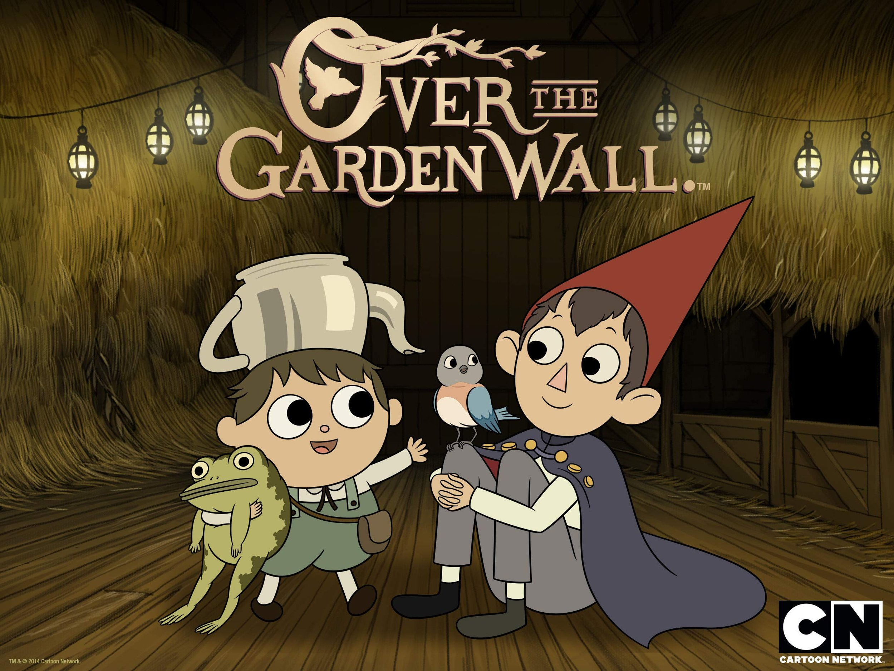
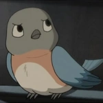
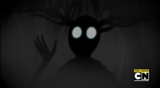

- Home
- Episodes
- Characters
- Review
OVER THE GARDEN WALL
CLICK THE ABOVE PICTURE FOR A SPECIAL SUPRISE
THE PLOT
Two Brothers, Wirt and Greg find themselves lost in the strange woods, adrift in a time. With the help of a shadowy Woodsmen and a foul-tempered bluebird named Beatrice, they travel through the foggy land of the unknown in Hope of finding a way home.
THE TRAILER
Watch Episodes
PILOT - THE TOMB OF THE UNKNOWN
EPISODE 1- THE OLD GRIST MILL | EPISODE 2 - HARD TIIMES AT THE HUSKIN' BEE
EPISODE 3- SHCOOLTOWN FOLLIES | EPISODE 4 - SONG OF THE DARK LANTERN
EPISODE 5- MAD LOVE | EPISODE 6 - LULLABY IN FROGLAND
EPISODE 7- THE RINGING OF THE BELL | EPISODE 8 - BABES IN THE WOOD
EPISODE 9- INTO THE UNKNOWN | EPISODE 10 - THE UNKNOWN
| MAIN CHARACTERS | ||
|---|---|---|
| Name | Description | |
 |
Wirt | Wirt is the older half-brother of Gregory. He is the protagonist of the show, and views the world in a serious way, unlike his brother. He is determined and often makes a point of being a contrarian, which frequently leads the pair into trouble. |
 |
Gregory | Gregory, affectionately nicknamed Greg, is Wirt's younger half-brother. He is a very energetic boy who always has a smile on his face and very wild ideas on his mind. He has a habit of wandering out on his own. He has a pet frog, which he found before his descent into the Unknown. He also carries a rock (that was stolen from Mrs. Daniel's garden), that will randomly make Rock Facts. He is the deuteragonist of the show. |
|  | Beatrice | Beatrice is the tritagonist and the false antagonist of the series, she is a talking bluebird that accompanies Wirt and Gregory, giving little lines of advice to them every now and then |
 |
Woodsman | The Woodsman is introduced in the Comics as an older man who depends greatly on his family for a sense of balance and security. Preferring a good book over the chance to explore the outdoors, the Woodsman is introverted and contently reserved. The Woodsman can potentially be seen as an ex-follower of the Beast. |
 |
Jason Funderburker-The Frog | Gregory's pet frog is a character who appears in Over the Garden Wall. Throughout the story, the Frog appears to be a narrator of the brother's journey through the Dark Forest. He has many unnatural abilities that include the ability to talk (as well as sing) and play piano. |
|  | The Beast | The Beast is the main antagonist of Over the Garden Wall. He is the monster of The Unknown and is feared throughout it. His goal is to catch the brothers, Wirt and Gregory, and turn them into Edelwood trees in order to fuel his lantern. |
LET'S HEAR YOUR THOUGHTS ON OVER THE GARDEN WALL